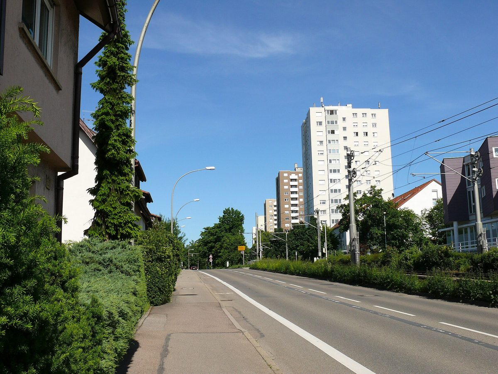

독일 슈투트가르트 시영 에너지회사·주택협동조합, 가스 쓰던 58가구 고층 아파트에 히트펌프 '에너지 모듈' 가동…세입자 난방비는 그대로

나무 외장 컨테이너 속 히트펌프 4대를 녹색전기로, 전기 1kWh로 열 3.5~4kWh…모듈 설치 10분·건물 연결 반나절, 옆 동 57가구 모듈은 2025년 가을부터 가동
독일 슈투트가르트 시영 에너지회사(Stadtwerke Stuttgart)가 10월 29일 바일림도르프 구에서 주택협동조합 '바우 운트 하임슈테텐페어라인 슈투트가르트(Bau- und Heimstättenverein Stuttgart eG)'의 고층 아파트를 데우는 히트펌프 '에너지 모듈'을 공식 가동했다. 지금까지 가스로 난방하던 58가구 건물 앞에 나무 외장을 두른 컨테이너를 놓고, 그 안의 히트펌프 4대를 녹색전기로 돌려 건물 전체에 열을 대는 방식이다. 시영 에너지회사는 전기 1kWh로 열 3.5~4kWh를 얻으며, 미리 만든 모듈을 기초 위에 올리는 데 10분이 채 걸리지 않았고 건물 연결도 반나절 만에 끝났다고 밝혔다. 협동조합은 난방만이 아니라 창호·단열·태양광 설비까지 건물 전체를 고쳤으며, 욕실 교체 등으로 세입자의 개보수 비용 부담은 늘지만 난방에 드는 부대비용은 오르지 않는다고 설명했다. 카린 아우텐리트(Karin Autenrieth) 협동조합 상임이사는 이번 시범사업이 기존 다층 건물에서도 화석연료 없이, 세입자 난방비 부담을 늘리지 않는 난방이 가능하다는 것을 보여 준다고 말했다. 바로 옆 고층 건물(크로코딜베크 20번지)에서는 57가구용 첫 모듈이 2025년 가을부터 돌고 있으며, 시영 에너지회사는 모듈을 더 늘릴 계획이지만 장소와 시기는 밝히지 않았다.
시민에너지 관점
두 동 합쳐 115가구의 가스 난방을 컨테이너 하나씩으로 바꾸면서 설치는 10분, 연결은 반나절에 끝냈다는 것은 공동주택 난방 전환이 오래 걸리고 번거롭다는 통념을 흔든다. 가장 큰 걱정은 전환 비용이 세입자에게 넘어가는 것인데, 협동조합은 개보수 부담이 늘어나는 사실을 숨기지 않으면서도 난방비만큼은 오르지 않게 한다는 기준을 먼저 내걸었다. 이윤보다 거주자의 주거비를 앞세우는 주택협동조합이 지역 공공 에너지회사와 손을 잡았기에 '세입자 부담 중립'이 사업의 출발 조건이 될 수 있었던 것으로 보인다. 국내 공공임대·노후 공동주택의 난방 전환도 지자체 에너지 기관과 입주자 조직·주택협동조합이 함께 설계하고, 세입자 난방비를 늘리지 않는다는 조건을 사업 기준에 넣는 데서 시작해야 한다.
출처: SWR Aktuell 2026-10-29 Philipp Pfäfflin 원문 보기
ドイツ・シュトゥットガルト市営エネルギー会社と住宅協同組合、ガス暖房だった58世帯の高層住宅でヒートポンプ「エネルギーモジュール」稼働…入居者の暖房費は据え置き
木の外装のコンテナ内のヒートポンプ4台をグリーン電力で、電気1kWhで熱3.5～4kWh…モジュール設置10分・建物への接続半日、隣棟の57世帯用モジュールは2025年秋から稼働
ドイツのシュトゥットガルト市営エネルギー会社（シュタットヴェルケ・シュトゥットガルト）が10月29日、ヴァイリムドルフ区で、住宅協同組合「バウ・ウント・ハイムシュテッテンフェアアイン・シュトゥットガルト（Bau- und Heimstättenverein Stuttgart eG）」の高層住宅を暖めるヒートポンプの「エネルギーモジュール」を正式に稼働させた。これまでガスで暖房していた58世帯の建物の前に木の外装をまとったコンテナを置き、その中のヒートポンプ4台をグリーン電力で動かして建物全体に熱を送る方式だ。市営エネルギー会社によると、電気1kWhから熱3.5～4kWhが得られ、あらかじめ組み立てたモジュールを基礎の上に据えるのに10分もかからず、建物への接続も半日で終わった。協同組合は暖房だけでなく窓・断熱・太陽光設備まで建物全体を改修しており、浴室の交換などで入居者の改修費負担は増えるものの、暖房にかかる付帯費用は上がらないと説明した。協同組合の常勤理事カリン・アウテンリート（Karin Autenrieth）氏は、今回のモデル事業が既存の多層建物でも化石燃料を使わず、入居者の暖房費負担を増やさない暖房が可能であることを示していると述べた。すぐ隣の高層建物（クロコディルヴェーク20番地）では57世帯用の最初のモジュールが2025年秋から稼働しており、市営エネルギー会社はモジュールをさらに増やす計画だが、場所と時期は明らかにしなかった。
市民エネルギーの視点
2棟で計115世帯のガス暖房をコンテナ一つずつで置き換え、設置は10分、接続は半日で済ませたことは、集合住宅の暖房転換は時間がかかり面倒だという通念を揺さぶる。最大の懸念は転換費用が入居者に転嫁されることだが、協同組合は改修負担が増える事実を隠さないまま、暖房費だけは上げないという基準を先に掲げた。利益より住む人の住居費を優先する住宅協同組合が地域の公共エネルギー会社と手を組んだからこそ、「入居者負担の中立」を事業の出発条件にできたとみられる。韓国の公共賃貸や老朽集合住宅の暖房転換も、自治体のエネルギー機関と入居者組織・住宅協同組合が共に設計し、入居者の暖房費を増やさないという条件を事業基準に盛り込むところから始めるべきだ。
出典: SWRアクトゥエル（SWR Aktuell） 2026-10-29 フィリップ・プフェフリン（Philipp Pfäfflin） 原文を読む
德国斯图加特市营能源公司与住房合作社在原用燃气的58户高层公寓启用热泵“能源模块”…租户暖气费不变
木质外壳集装箱内4台热泵用绿电运行，1千瓦时电产热3.5至4千瓦时…模块安放不到10分钟、接入楼宇半天，隔壁楼57户的模块自2025年秋运行
德国斯图加特市营能源公司（Stadtwerke Stuttgart）10月29日在魏利姆多夫区正式启用一套热泵“能源模块”，为住房合作社“斯图加特建房与家园协会（Bau- und Heimstättenverein Stuttgart eG）”的一栋高层公寓供暖。做法是在这栋此前用燃气供暖的58户楼前放置一个木质外壳的集装箱，用绿色电力驱动箱内的4台热泵，为整栋楼供热。市营能源公司表示，1千瓦时电可产生3.5至4千瓦时热量，预制好的模块放上地基用时不到10分钟，与楼宇的连接也在半天内完成。合作社不仅更换了供暖，还对整栋楼进行了改造，包括窗户、保温和光伏设施，并说明虽然更换浴室等使租户分摊的改造费用增加，但供暖方面的附加费用不会上涨。合作社执行理事卡琳·奥滕里特（Karin Autenrieth）表示，这一试点项目证明，即使在既有多层建筑中，也可以实现不用化石燃料、又不增加租户暖气负担的供暖。紧邻的另一栋高层（克罗科迪尔路20号）里，供57户使用的第一个模块自2025年秋天起已在运行，市营能源公司计划继续增加模块，但没有透露地点和时间。
市民能源视角
两栋楼共115户的燃气供暖各用一个集装箱替换，安放只需10分钟、接入只需半天，这动摇了“公寓供暖转换耗时又麻烦”的固有印象。最大的担忧是转换成本转嫁给租户，而合作社在不隐瞒改造负担增加的同时，先立下了暖气费不涨的标准。正因为把住户居住成本置于利润之前的住房合作社与本地公共能源公司携手，“租户负担中性”才可能成为项目的出发条件。韩国公共租赁住房和老旧公寓的供暖转换，也应由地方能源机构与住户组织、住房合作社共同设计，并从把“不增加租户暖气费”写进项目标准开始。
来源: 西南广播电视台时事（SWR Aktuell） 2026-10-29 Philipp Pfäfflin 查看原文
Stuttgart's municipal energy company and a housing co-operative switch on a heat pump "energy module" for a 58-flat gas-heated tower block, with tenants' heating costs unchanged
Four heat pumps run on green power inside a timber-clad container, turning 1kWh of electricity into 3.5 to 4kWh of heat; the module was placed in under 10 minutes and connected in half a day, and a 57-flat module next door has run since autumn 2025
Stadtwerke Stuttgart, the city's municipal energy company, on 29 October officially switched on a heat pump "energy module" in the Weilimdorf district to heat a tower block owned by the housing co-operative Bau- und Heimstättenverein Stuttgart eG. A timber-clad container has been set in front of the 58-flat building, which was heated with gas until now, and the four heat pumps inside run on green electricity to supply heat to the whole building. The municipal company said each kWh of electricity yields 3.5 to 4kWh of heat, that the prefabricated module was placed on its foundation in under 10 minutes, and that connecting it to the building took half a day. The co-operative has refurbished the entire building, adding new windows, insulation and a solar installation as well as replacing the heating, and explained that while tenants will pay more towards the refurbishment because of items such as new bathrooms, the service charges for heating will not rise. Karin Autenrieth, executive board member of the co-operative, said the pilot shows that heating free of fossil fuels that does not raise tenants' heating costs is possible even in existing multi-storey buildings. In the neighbouring tower block at Krokodilweg 20, the first module, serving 57 flats, has been running since autumn 2025, and the municipal company plans more modules but did not say where or when.
Citizen Energy View
Replacing the gas heating of 115 flats across two blocks with one container each, placed in 10 minutes and connected in half a day, challenges the assumption that switching apartment heating is slow and cumbersome. The biggest worry is that the cost of the switch lands on tenants, yet the co-operative set a rule up front that heating costs will not rise, while being open that refurbishment costs will. It appears that because a housing co-operative that puts residents' housing costs ahead of profit teamed up with a local public energy company, "no extra burden on tenants" could become a starting condition of the project. In Korea, too, heating conversions in public rental and ageing apartment blocks should be designed jointly by local energy agencies, tenants' organisations and housing co-operatives, starting by writing "no rise in tenants' heating costs" into project criteria.
Source: SWR Aktuell 2026-10-29 Philipp Pfäfflin Read the original